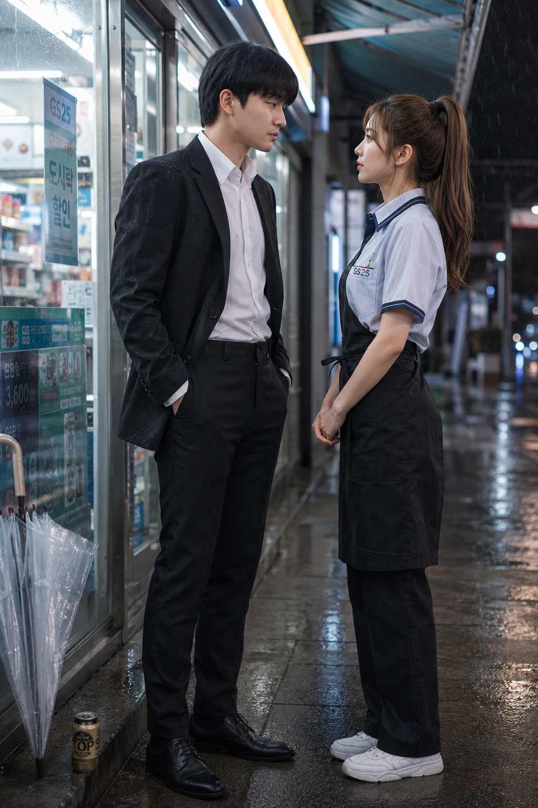

서울로 돌아온 뒤 김시안의 퇴근 시간은 더 들쭉날쭉해졌지만, 회사 근처 편의점 문을 미는 시간만큼은 묘하게 비슷했다. 서나윤은 요 며칠 사이 그 리듬을 더 정확하게 읽게 됐다. 피곤한 날은 발소리가 조금 느리고, 생각이 복잡한 날은 문이 열려도 바로 진열대로 가지 않는다. 오늘은 두 가지가 다 섞인 얼굴이었다.
서나윤"어서 오세요."
시안은 익숙하게 물과 캔커피를 집어 들고 계산대로 왔다. 나윤은 바코드를 찍다가도 그의 손에 들린 휴대전화를 한 번, 다시 얼굴을 한 번 봤다. 메시지 창이 켜졌다 꺼진 흔적이 너무 노골적이었다.
서나윤"오늘은 커피 다시 사네요."
김시안"네. 좀 길어질 것 같아서요."
서나윤"퇴근했는데도요?"
김시안"퇴근하고 끝나는 날만 있는 건 아니라서."
나윤은 영수증을 뽑으며 피식 웃었다. 가벼운 웃음이었지만, 시선만은 조금 날카로워져 있었다.
서나윤"진짜 바쁘긴 바쁘시네요."
김시안"그러게요."
서나윤"아니면, 바쁜 척하기 좋은 날이거나."
시안은 그제야 눈을 들어 나윤을 봤다. 그녀는 시선을 피하지 않았다. 편의점 조명 아래에서 속쌍꺼풀 밑의 눈빛이 더 또렷하게 살아났다. 장난으로 던진 말처럼 들리지만, 진짜로 확인하고 싶은 게 있는 사람의 얼굴이었다.
김시안"그렇게 보입니까."
서나윤"네."
나윤은 결제를 끝내고도 물건을 바로 건네지 않았다. 대신 비닐봉투 손잡이에 손가락을 걸고, 그를 한 번 더 훑어봤다. 셔츠 목선, 손목 근처에 남은 세제 향, 밤이 깊은데도 완전히 지쳐 보이지는 않는 표정까지. 그리고 아주 짧게 물었다.
서나윤"오늘도 부산 쪽 기다렸어요?"
직접 지명을 꺼내지 않았는데도 시안은 무슨 뜻인지 바로 알아들었다. 그가 아무 대답도 하지 않자 나윤은 입술을 꾹 다물었다가, 봉투를 결국 건네며 손을 뗐다.
서나윤"됐어요. 손님 표정 보면 대충 알아."
김시안"뭘요."
서나윤"누굴 기다리는데, 그 사람이 지금 안 오는 얼굴."
그 말 뒤에 더 이어 붙일 말이 없어서인지, 시안은 봉투를 받아 들고 잠시 가만히 서 있었다. 나윤은 그런 그를 보고 괜히 포스기 화면만 두드렸다. 더 물으면 선 넘는다는 걸 알면서도, 이미 마음은 선을 다 반쯤 밟고 들어간 상태였다.
서나윤"다음 손님 오기 전에 가셔도 돼요."
툭 내뱉은 말은 삐친 티가 났다. 시안은 짧게 웃을 듯하다가 결국 문 쪽으로 걸음을 옮겼다. 그런데 자동문이 열리기 직전, 밖에서 갑자기 비가 더 굵어졌다. 그는 처마 아래에서 잠깐 멈춰 섰다.
십 분쯤 지났을까. 편의점 안 손님이 끊기고, 나윤은 점장에게 잠깐 뒷정리 좀 다녀오겠다고 말한 뒤 카운터 밖으로 나왔다. 손에는 편의점 비닐 우산 하나가 들려 있었다. 처마 아래에는 아직 시안이 서 있었다. 커피 캔은 이미 반쯤 비어 있었다.
서나윤"안 갔네요."
김시안"비가 생각보다 세서요."
서나윤"비 핑계 좋다."
나윤은 우산을 접은 채 바로 옆에 섰다. 가까이 오자 비 냄새와 편의점 냉기가 함께 묻어왔다. 시안이 무슨 말을 할지 고르기도 전에 그녀가 먼저 입을 열었다.
서나윤"손님, 나 진짜 궁금한데."
김시안"네."
서나윤"왜 그렇게 아무렇지 않은 얼굴을 해요."
그 질문은 장난기가 거의 없었다. 나윤은 손에 쥔 우산 손잡이를 괜히 한 번 더 세게 잡고 있었다.
서나윤"아까부터 계속 누구 기다리는 사람 얼굴인데, 말은 하나도 안 하잖아요. 그러면 보는 사람만 더 신경 쓰여요."
시안은 나윤을 내려다봤다. 그녀는 이미 돌이킬 생각이 없는 얼굴이었다. 부끄러워서 도망가는 타입이 아니라, 일단 뱉었으면 끝까지 확인하려는 쪽이었다.
김시안"나윤 씨가 왜 그렇게까지 신경 씁니까."
서나윤"내가요?"
나윤은 짧게 웃었다. 그러나 그 웃음은 바로 풀리지 못했다.
서나윤"모르겠어요? 진짜?"
비가 처마 끝을 두드리며 한 줄로 떨어졌다. 차들이 물웅덩이를 밟고 지나가는 소리가 가깝게 스쳤다. 나윤은 시선을 피하지 않은 채 한 걸음 더 다가왔다.
서나윤"손님 오면 내가 먼저 문 쪽 보게 되고, 늦게 오면 괜히 짜증 나고, 다른 사람 흔적 묻어 있으면 기분 나빠져요. 이 정도면 충분히 신경 쓰는 거 아닌가."
직선적인 고백이었지만 목소리는 생각보다 떨리지 않았다. 오히려 떨린 건 그녀가 우산 손잡이를 쥔 손끝이었다.
김시안"나윤 씨."
서나윤"네."
김시안"지금 감정으로 바로 들어오면 나중에 더 다칠 수도 있어요."
그 말에 나윤은 눈을 가늘게 좁혔다. 말은 맞는데, 그래서 더 약이 올랐다.
서나윤"그러면 손님은 맨날 안 다치게만 살아요?"
김시안"아니요."
서나윤"그럼 나한테만 그러지 마요."
그 문장이 끝나자마자 나윤은 우산을 옆으로 던지듯 내려두고, 시안 셔츠 소매를 가볍게 잡아당겼다. 충동적인 동작이었지만 완전히 무모하지는 않았다. 물러나고 싶으면 물러날 틈을 남겨 둔 손이었다. 시안은 그 손을 떼어 내지 않았다. 대신 그녀의 얼굴을 내려다본 채 움직이지 않았다.
서나윤"한 번쯤은 나도 먼저 기억되고 싶거든요."
그 말이 이상하게 오래 남았다. 시안은 잠깐 눈을 감았다 뜬 뒤, 나윤 손목을 느슨하게 잡아 아래로 내렸다. 밀어내기 위한 손은 아니었다. 대신 도망치지 않게 중심을 잡아 주는 방식에 가까웠다.
김시안"후회 안 합니까."
서나윤"해도 내가 해요."
대답이 끝나기도 전에 둘 사이 거리가 짧게 무너졌다. 먼저 닿은 건 나윤 쪽이었지만, 그다음 흐름은 시안이 잡았다. 그는 그녀가 감정에만 밀리지 않게 목덜미 뒤를 손바닥으로 감싸 중심을 고정했고, 나윤은 놀라서 눈을 한 번 감았다 뜨면서도 끝까지 물러나지 않았다.
빗소리가 더 크게 들리는 짧은 순간, 나윤이 늘 말로 먼저 밀어붙이던 기세는 입술 끝에서 한 번 흔들렸다. 그러나 물러난 뒤에도 그녀는 얼굴을 들고 있었다. 숨이 조금 가빠졌을 뿐, 도망가고 싶은 표정은 아니었다.

처마 아래 좁은 공간에 빗소리만 가득했다. 나윤은 물러서지 않았다. 오히려 셔츠 소매를 잡은 손에 더 힘이 들어갔다. 시안의 손이 그녀 목덜미 뒤를 감싸자, 나윤은 짧게 숨을 들이켰다. 손바닥 온도가 젖은 머리카락 너머로 전해졌다.
서나윤"손님."
부르고도 더 말을 잇지 못했다. 평소 같으면 먼저 밀어붙였을 텐데, 막상 이 거리에서는 목소리가 작아졌다. 시안은 그녀 얼굴을 내려다보며 천천히 엄지로 목선을 쓸었다. 나윤의 어깨가 미세하게 떨렸다.
김시안"나윤 씨가 먼저 잡았잖아요."
서나윤"......네."
김시안"그런데 왜 떨어요."
서나윤"안 떨었거든요."
말과 달리 손끝은 셔츠 천을 더 세게 움켜쥐고 있었다. 시안은 그 손을 떼어내지 않고, 다른 손으로 그녀 허리께를 천천히 짚었다. 앞치마 끈이 살짝 밀리며 유니폼 셔츠가 허리선을 따라 당겨졌다. 나윤은 그 감촉에 저도 모르게 허리를 곧추세웠다. 운동으로 다져진 복근이 옷 위로도 단단하게 드러났다.
김시안"긴장한 티가 나는데."
서나윤"긴장한 적 없어요. 나는......"
시안이 허리에 얹은 손을 살짝 당기자 나윤의 상체가 그쪽으로 기울었다. 가슴이 그의 셔츠에 닿을 듯 말 듯한 거리였다. 나윤은 숨을 참았다. 편의점 유니폼 아래로 유두가 천에 스칠 정도로 긴장하고 있었다.
서나윤"......아."
자신도 모르게 새어나온 소리에 나윤은 입술을 깨물었다. 시안은 그 반응을 놓치지 않고, 허리에 둔 손을 천천히 위로 올렸다. 갈비뼈 옆선을 타고 올라가는 손끝이 셔츠 주름을 하나씩 만들었다. 나윤은 참으려 했지만 호흡이 조금씩 거칠어졌다.
김시안"말로만 밀어붙이는 줄 알았는데."
서나윤"말로만...... 아니에요."
시안의 손이 그녀 겨드랑이 바로 아래, 가슴 옆선에 닿았다. 아직 직접 만지지는 않고, 살짝 감싸듯 멈춰 있었다. 나윤은 그 애매한 접촉에 더 예민해졌다. 자신이 원해서 시작한 일인데도, 막상 상대가 주도권을 잡자 온몸이 반응하고 있었다.
서나윤"손님...... 진짜."
김시안"진짜 뭐."
서나윤"내가 먼저 한 건데, 왜 내가 더......"
말을 끝내기도 전에 시안의 엄지가 그녀 가슴 아래쪽을 살짝 쓸었다. 천 위로 전해지는 둔한 감촉에 나윤은 숨을 들이켰다. 유니폼 셔츠는 얇은 면이라 손가락 움직임이 고스란히 느껴졌다. 시안은 천천히 손바닥 전체로 그녀 왼쪽 가슴을 감쌌다. 생각보다 묵직한 무게감이 손바닥을 채웠다. 운동으로 단련된 체형이었지만 가슴은 의외로 풍만했다.
서나윤"하...... 아."
나윤이 신음을 삼키며 고개를 살짝 젖혔다. 포니테일 끝이 등 뒤로 흘러내렸다. 시안은 그 목선을 잠시 바라보다가, 가슴을 감싼 손에 천천히 힘을 주었다. 손바닥 안에서 유방이 부드럽게 뭉개졌다. 브래지어 너머로 유두가 딱딱하게 서는 게 느껴졌다.
김시안"여기서 이러면 안 되는 거 알아요."
서나윤"늦었어...... 이미."
나윤은 스스로도 놀랄 만큼 솔직한 대답을 내뱉었다. 이미 선은 한참 전에 넘었다. 그녀는 시안의 셔츠 소매를 잡은 손을 풀고, 대신 그의 허리께를 더듬어 재킷 안쪽으로 손을 넣었다. 셔츠 너머로 느껴지는 체온이 뜨거웠다.
서나윤"손님 몸...... 생각보다 더 단단하네."
김시안"나윤 씨도요."
시안은 그녀 가슴을 주무르며 다른 손으로 허리 뒤를 감쌌다. 앞치마 끈이 완전히 풀리며 바닥에 떨어졌다. 이제 유니폼 셔츠만 남은 상태였다. 시안은 허리선을 따라 손을 아래로 내렸다. 엉덩이 위쪽, 허리와 맞닿은 곡선을 손바닥으로 훑자 나윤이 짧게 숨을 들이켰다.
서나윤"거기......"
김시안"여기요?"
시안은 그녀 엉덩이를 감싸 쥐고 천천히 주물렀다. 탄탄한 근육이 손바닥 안에서 긴장했다 풀렸다를 반복했다. 나윤은 그의 어깨에 이마를 기댔다. 숨소리가 점점 뜨거워졌다. 비 냄새와 편의점 냉장고 특유의 냉기, 그리고 시안의 세제 향이 섞여 그녀의 감각을 자극했다.
서나윤"손님...... 나, 진짜 이런 거 처음은 아닌데."
김시안"네."
서나윤"근데 왜 이렇게 떨리지."
시안은 대답 대신 그녀 턱을 살짝 들어 올렸다. 다시 입술이 겹쳐졌다. 이번에는 더 깊었다. 아까는 확인하듯 짧게 닿았지만, 지금은 달랐다. 시안의 혀가 나윤의 입술 사이를 비집고 들어왔다. 그녀는 처음에 살짝 굳었지만 곧 받아들였다. 혀끝이 서로 스치자 나윤의 손이 시안 등 뒤에서 셔츠를 움켜잡았다.
"으...... 응......"
입 안에서 작은 소리가 났다. 시안은 그녀 혀를 천천히 빨아들이며 손으로 가슴을 더 적극적으로 주물렀다. 엄지로 유두 위치를 찾아 원을 그리며 문질렀다. 천이 두 겹이었지만 유두는 이미 단단하게 서 있어서 위치를 찾기는 쉬웠다. 나윤은 허리가 저절로 들썩였다.
서나윤"하아...... 아, 거기......"
입술이 떨어지자 침이 가느다랗게 이어졌다. 나윤은 눈이 약간 풀린 채 시안을 올려다봤다. 평소 그 도도하던 고양이상 눈매가 지금은 젖어 있었다. 시안은 그 얼굴을 잠시 들여다보다가, 셔츠 단추를 하나 풀었다. 나윤은 막지 않았다. 두 번째 단추, 세 번째 단추. 셔츠가 벌어지며 검은색 브래지어가 드러났다.
서나윤"여기...... 밖인데."
김시안"아까는 신경 안 썼잖아요."
서나윤"그건......"
시안은 브래지어 위로 손을 얹었다. 레이스 천 너머로 유두가 더 또렷하게 만져졌다. 그는 손끝으로 유두를 살짝 집었다 놓았다. 나윤은 입술을 깨물며 신음을 참았다. 시안은 그녀 반응을 확인하며 브래지어 컵을 아래로 살짝 밀어냈다. 유두가 차가운 공기에 바로 노출되자 더 딱딱하게 서올랐다.
김시안"예쁘네."
서나윤"......그런 말, 다른 사람한테도 해요?"
김시안"지금은 나윤 씨한테만."
시안은 고개를 숙여 그녀 유두를 입으로 가져갔다. 혀끝으로 살짝 건드리자 나윤이 작게 비명을 질렀다. 이내 입을 손으로 막았지만, 이미 늦었다. 시안은 그 반응에 미소 지으며 유두를 입술로 감싸고 천천히 빨아들였다.
"으응...... 하, 아......!"
나윤은 그의 머리를 붙잡았다. 밀어내려는 건지, 더 가까이 당기려는 건지 자신도 모르는 손짓이었다. 시안의 혀가 유두 주위를 원형으로 핥고, 이로 살짝 깨물었다 놓기를 반복했다. 한쪽을 애무하는 동안 다른 손은 반대쪽 가슴을 감싸고 엄지로 유두를 비볐다.
서나윤"손님...... 손님, 나......"
김시안"응."
서나윤"나만...... 지금 이상한 거 아니죠?"
시안은 고개를 들었다. 그녀 유두는 침으로 반짝이며 더 붉게 부풀어 있었다. 나윤은 얼굴이 붉어진 채 숨을 헐떡이고 있었다. 시안은 그녀 뺨을 손등으로 쓸었다.
김시안"나윤 씨만 그런 거 아니에요."
서나윤"다행이다......"
시안은 다시 그녀 입술에 가볍게 입을 맞추고, 이번에는 손을 아래로 내렸다. 유니폼 바지 허리춤에 손가락을 걸자 나윤이 몸을 살짝 굳혔다. 하지만 곧 스스로 숨을 크게 들이쉬고는, 시안의 손목을 잡아 자기 배 쪽으로 더 끌어당겼다.
서나윤"멈추지 마요."
김시안"알겠어요."
시안은 바지 단추를 풀고 지퍼를 천천히 내렸다. 운동화를 신은 채라 바지를 완전히 벗기기는 어려웠지만, 엉덩이 아래까지만 내려도 충분했다. 검은색 팬티가 드러났다. 시안은 손바닥으로 그녀 팬티 위를 천천히 쓸었다. 이미 천이 축축하게 젖어 있었다.
서나윤"......아."
자신의 상태가 손바닥으로 전해졌다는 걸 안 나윤은 얼굴이 더 붉어졌다. 하지만 도망가지 않았다. 오히려 시안의 목에 팔을 두르고 균형을 잡았다. 시안은 팬티 위로 손가락을 움직이며 천천히 음부를 따라 선을 그었다. 젖은 천이 대음순 모양을 따라 눌렸다.
김시안"많이 젖었네."
서나윤"......그런 말 하지 마요."
김시안"사실인데."
시안은 팬티 옆선으로 손가락을 집어넣었다. 직접 닿은 피부는 더 뜨겁고 끈적였다. 손가락 끝이 음모를 스치고 대음순 사이를 천천히 갈랐다. 나윤은 그의 어깨에 얼굴을 묻고 짧게 숨을 내뱉었다.
"하...... 으응......"
시안의 중지가 클리토리스를 찾아 살짝 눌렀다. 나윤의 허리가 튕기듯 움직였다. 그는 손가락 끝으로 작은 돌기를 원형으로 문지르기 시작했다. 속도를 바꾸고, 압력을 바꾸며 그녀 반응을 살폈다. 나윤은 점점 더 거친 숨을 내쉬며 그의 목을 더 세게 끌어안았다.
서나윤"거기...... 아, 너무......"
김시안"아파요?"
서나윤"아니...... 좋아서......"
시안은 그녀 클리토리스를 계속 자극하며 다른 손가락으로 질 입구를 더듬었다. 애액이 손가락 마디까지 흘러내렸다. 그는 검지를 천천히 밀어 넣었다. 나윤이 짧게 숨을 들이켰다. 질벽이 손가락을 단단히 조여왔다.
서나윤"아...... 들어왔......"
김시안"아파요?"
서나윤"조금...... 근데 괜찮아."
시안은 천천히 손가락을 움직이기 시작했다. 얕게 넣었다 뺐다를 반복하며 질 내부를 탐색했다. 동시에 엄지로 클리토리스를 계속 문질렀다. 두 자극이 겹치자 나윤은 점점 더 큰 소리로 신음했다. 비 소리에 묻힐 거라 생각했지만, 그래도 혹시 몰라 그녀는 자기 손등을 깨물었다.
서나윤"으으...... 응, 하......"
시안은 손가락을 두 개로 늘렸다. 검지와 중지를 함께 밀어 넣자 질벽이 더 강하게 조여왔다. 그는 손가락을 굽혀 질 전벽을 천천히 문질렀다. 나윤이 갑자기 크게 떨며 허리를 뒤로 젖혔다.
"아앗!"
서나윤"거기...... 거기 이상해......!"
김시안"여기요?"
시안은 같은 지점을 다시 자극했다. 손가락 끝으로 전벽을 원형으로 문지르고, 클리토리스를 동시에 눌렀다. 나윤은 다리가 풀려 시안에게 거의 매달리다시피 했다. 운동화 바닥이 처마 아래 젖은 바닥에 미끄러졌다.
서나윤"나...... 나 곧......"
김시안"가도 돼요."
시안은 손가락 속도를 높였다. 질 안에서 손가락이 빠르게 움직이며 젖은 소리가 났다. 클리토리스를 문지르는 엄지도 더 빠르게 떨었다. 나윤은 시안의 셔츠를 움켜잡고 몸을 떨었다. 절정이 가까워질수록 질벽이 손가락을 더 세게 조여왔다.
서나윤"아...... 아, 아악!"
나윤은 시안의 가슴에 얼굴을 파묻고 짧게 비명을 질렀다. 온몸이 경련하듯 떨렸다. 질 안에서 손가락을 강하게 조이며 애액이 손바닥까지 흘러내렸다. 시안은 절정이 가라앉을 때까지 손가락을 천천히 움직이며 그녀 반응을 지켜봤다.
잠시 후, 나윤은 숨을 헐떡이며 얼굴을 들었다. 눈가가 살짝 붉어져 있었다. 평소 그 당당하던 표정은 온데간데없고, 완전히 풀린 얼굴이었다. 시안은 젖은 손가락을 천천히 빼내며 그녀 이마에 묻은 땀을 닦아줬다.
서나윤"......망했다."
김시안"뭐가요."
서나윤"나...... 진짜 이제 손님한테 못 당할 것 같아."
시안은 짧게 웃었다. 나윤은 그의 손을 잡아 자기 뺨에 가져다 댔다. 아직 손가락에는 그녀의 체액이 묻어 있었지만, 신경 쓰지 않았다.
서나윤"근데 후회는 안 해요. 내가 먼저 시작한 거니까."
김시안"알아요."
서나윤"다음엔...... 나도 손님한테 해주고 싶은데."
김시안"다음이 있다고 생각해요?"
서나윤"있어요. 내가 만들 거예요."
나윤은 그렇게 말하며 천천히 바지를 올렸다. 다리는 아직 후유증으로 조금 떨렸지만, 손놀림은 의외로 침착했다. 셔츠 단추를 채우고 앞치마를 다시 주워 묶었다. 포니테일을 고쳐 묶으며 숨을 한 번 크게 들이쉬었다.
서나윤"나, 카운터 들어가야 해요. 점장이 부를지도 몰라."
김시안"그러네요."
서나윤"손님은...... 커피나 마저 마셔요. 식었겠지만."
시안은 바닥에 둔 캔커피를 집어 들었다. 정말로 반쯤 남은 커피는 이미 차갑게 식어 있었다. 나윤은 그 모습을 보고 피식 웃었다. 아직 얼굴은 붉었지만, 눈빛은 이미 평소의 당당함을 되찾고 있었다.
서나윤"아, 그리고."
김시안"네."
서나윤"부산이든 어디든...... 기다리는 사람 있어도 상관없어요. 나는 내가 할 거 다 할 거니까."
그 말을 끝으로 나윤은 돌아서서 편의점 안으로 들어갔다. 유리문이 닫히고, 그녀는 카운터 안으로 들어가 포스기 화면을 정리하는 척했다. 하지만 손끝은 아직 떨리고 있었다.
처마 아래, 시안은 식은 커피를 한 모금 마시며 빗줄기를 바라봤다. 나윤의 체취가 손가락에 남아 있었다. 그는 손을 쥐었다 폈다 하며 잠시 생각에 잠겼다. 부산의 소율은 점점 멀어지고, 서울의 나윤은 점점 가까워지고 있었다. 그리고 그 사이에서 자신이 무슨 얼굴을 하고 있었는지, 이제는 더 이상 모른 척할 수 없었다.
빗소리가 조금 잦아들었다. 시안은 빈 캔을 편의점 앞 쓰레기통에 버리고, 젖은 거리를 천천히 걸어갔다.